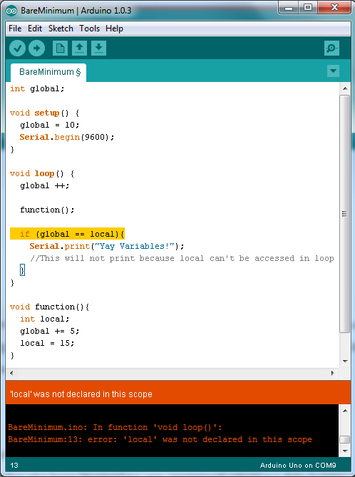
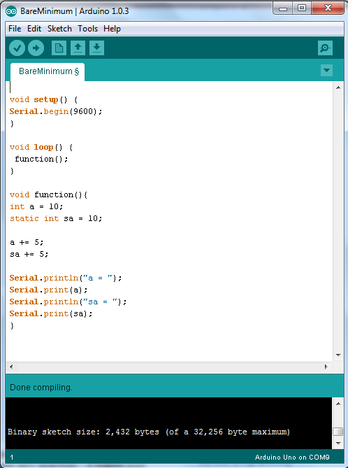
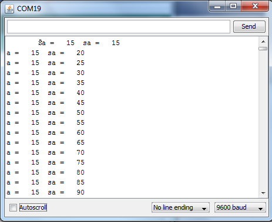

Programming
Introduction to Programming in C and Arduino
Objectives
After this chapter you should be able to:
- Identify When to Use Local, Global, and Static Variables
- Correctly Use Arithmetical and Relational Operators
- Identify When to Use If-Statements, While Loops, and For Loops
- Correctly Implement If-Statements, While Loops, and For Loops
Note: All Pictures in This Section Can Be Enlarged By Clicking on Them
Constants and Variables
Constants are values in a program that cannot change throughout a program’s execution. When a constant is defined, a program essentially just sees the constant and pastes the defined value into the function instead. Constants can be initialized using pound-define (#define) and are usually declared in all capital letters. Variables are locations in memory for storing values and can change over time. All variables have a type (int, long, char, etc.) and a visibility: global or local. Further, variables in certain instances can be static.
Type refers to what can be stored in a variable; different types can hold different values. For example, an int, or integer, can hold two bytes (or values from -32,768 to 32,767) while a char, or character, can hold one byte (or values from 0-255). For this reason, ints are usually used for numbers while chars are usually used for alphanumeric symbols.

|
Visibilty refers to where or how the variable is declared; the two kinds of visibility are global and local. Global variables are declared at the top of a program and are accessible throughout the entire program and all related functions. Local variables are defined inside a certain function, state, or other small part of a program and are not accessible beyond the outer limits of whatever they are declared in. In the picture on the right, notice the line highlighted in yellow and the Arduino error message. This will occur if you try to access a local variable outside of where it is defined. |
 |
| Arduino Error with Local Variables |
Static variables do not change between invocations in the program in which they are used; they are similar to global variables in that way. Static variables can only be manipulated or used in the function in which they are declared, but they do not lose their value between multiple function calls.
|  |  |
Finally, it is important to remember that variables are case sensitive. The common format for naming a variable is called “camel case” and consists of the first (or only) word in lower case and any additional words beginning with an uppercase letter. Variable names never have spaces; underscores are an acceptable alternative.
Operators
Operators are used in programs for the manipulation of data and variables. They are used for arithmetic, bit-wise operations, and comparisons.
Arithmetical operators consist of adding (+), subtracting (-), multiplying (*), dividing (/), and modulo (%). Modulo gives the remainder after a division. For example, having an operation 5%3 would mean to divide 5 by 3 and output the remainder (2). Arithmetical operators can be combined as a sort of short-hand to make programs look cleaner: +=, -=, *=, /=. A short-hand operator can be used with two values where at least one is a variable: for example “a” and 5. The code would be written as “a += 5;” and it means “a” equals the sum of “a” and 5. Therefore, if “a” had been equal to 11 before that line, it would now be equal to 17. Each short-hand operator works much in this way.
Relational operators consist mainly of less than (<), greater than (>), is equal to (==), and not (!). Relational operators “less than” and “greater than” can be combined with “equals” to achieve “less than or equal to” and “greater than or equal to.” “Not” can be combined with any of “less than,” “greater than,” and “equal to.” It is also important to note that when comparing two values to see if they are equal, a program must use two equal signs; using only one equals sign will simply reassign your variable rather than comparing it.